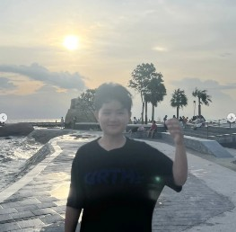

เกี่ยวกับฉัน

ฉันเป็นนักกีฬาบาสเกตบอลที่มีความหลงใหลในการเล่น การฝึกฝน และการทำงานร่วมกันเป็นทีม มุ่งมั่นพัฒนาศักยภาพทั้งด้านสมรรถภาพร่างกายและแผนการเล่น เพื่อเป้าหมายในการคว้าชัยชนะร่วมกับทีมในทุกทัวร์นาเมนต์
ตำแหน่งในสนาม
Point Guard / Shooting Guard
สังกัดทีม / สมาคม
กรุงเทพฯ, ประเทศไทย
คติประจำใจในการเล่น
"ทีมเวิร์กและการซ้อมหนักคือหัวใจของชัยชนะ"